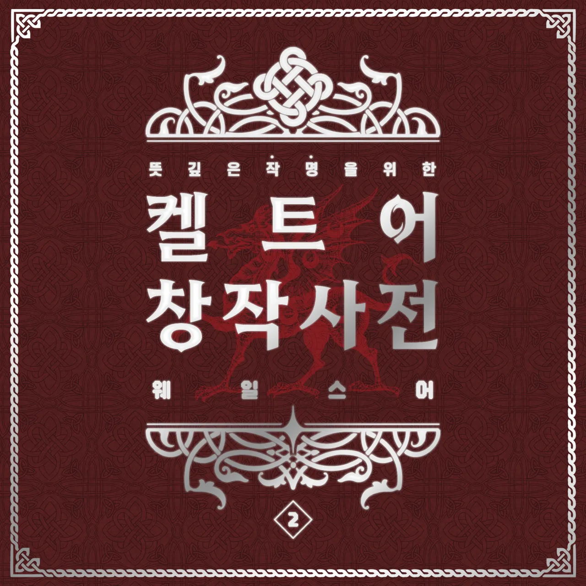
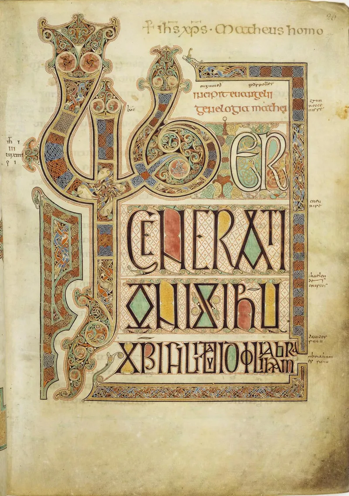

12월 28일까지!

12월 28일까지!


원전을 읽고, 원전을 옮겨 적습니다.
원전이 말하지 않는 설정은 창조하지 않습니다.
그래서 전쟁은 잔인하고, 판결은 어이없고,
시는 난해하고, 족보는 지루합니다.
숨기지 않습니다. 그것이 중세 문헌입니다.
유독 켈트 신화가 얽히면 이런 서술을 매우 자주 보게 됩니다. 물론 현대를 살아가는 작가님의 상상을 한껏 펼치는 건 아주 좋은 일입니다. 그러나 “실제로 그랬다”고 단정한다면 저는 강력하게 반대하며 오류라고 단언하겠습니다. 다시 한 번 이 문장을 보시죠. 루 라와다는 아일랜드 신화에 등장하는 인물입니다. “라와다”란 “긴 팔”을 뜻하는데, 그의 다재다능함을 상징하는 것으로 흔히 풀이됩니다. «마이 티랴의 두 번째 싸움»에서는 사울다나흐, 즉 “모든 기예에 골고루 통달한 자”라는 별명으로도 언급됩니다.
“여인의 얼굴 위에서 장미와 백합이 다투니 어느 쪽이 이기는지 누구도 알지 못하더라.” – 여성의 미모를 노래하는 아일랜드 문학의 상투구.
북유럽 신화에 전혀 관심이 없더라도 라그나로크는 한 번쯤 들어보셨을 겁니다. 간단히 설명하자면, 라그나로크는 북유럽 신화가 제시하는 말세와 종말입니다. 최후의 대전쟁이 벌어지고, 세상이 싸그리 불타고 리셋되지요. 그런데 어떤 분들은 “라그나로크”라고 말하고, 다른 분들은 “라그나뢰크”라고 말합니다. 무엇이 옳은 걸까요? 여기에는 800년 전부터 이어진 혼란의 역사가 있습니다. 그 시작은 1179년 아이슬란드의 시골에서 태어난 스튀르들라의 아들 스노리라는 시인으로 거슬러 올라갑니다.